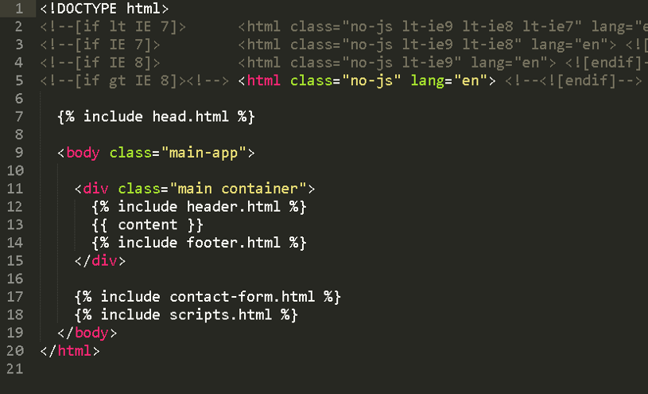

JazzPianoTV
Learn to Play the Piano for Real
by Amy Pellegrini
Amy's Role
Product Owner / Developer
About the project
Official Amy's Website and Blog with videos and resources for Piano and Jazz students
Technologies used
(Besides HTML/CSS/JavaScript)
- Jekyll static site generator (based on Ruby)
- SASS (CSS preprocessor) packed with Jekyll by default
- Skeleton light-weight HTML/CSS layout framework
- Node.js and npm for dev scripting and package management
Static blogging with Jekyll
PROS
|
CONS
Static blogging with Jekyll
PROS
- No DB management (less work)
- Clear and easy-to-read syntax (Liquid)
- Ease of migration
- Quick start-up
An index.html file with Jekyll

Static blogging with Jekyll
CONS
- Not scalable with large websites/blogs
- Important features partially supported or not supported at all (like pagination and search)
Node.js & npm
For package management and dev scripting
Fast, simple HTTP Server with Node.js
> npm install http-server -g
> http-server
Third party / cloud services
PROS
|
CONS
Third party / Cloud services
- Github for hosting and source code repository
- Formspree cloud-based email service
- Soundcloud and YouTube for multimedia (video & audio) content management
- Disqus comment management system
Third party / cloud services
PROS
- Scalability
- Branding and social networking
- Low cost / almost free for small, starter projects
- Fast and easy implementation
- Keep focus in product development
- Keep concerns on security and system management at the minimum
Third party / cloud services
CONS
- Subject to service provider policies and tech specs
- Subject to service provider downtimes and technical problems
- Very difficult to migrate content if needed
Github
For hosting and source code repository
PROS
|
CONS
Github Hosting
PROS
- GIT
- Jekyll supported by default
- Private domain name allowed
- Open-source, collaborative coding
- Great tools for code reviewing
- Quick deployment and setup
- It's FREE
Production deploy in github
> git push origin gh-pages
Formspree.io
Cloud-based email service
PROS
|
CONS
Formspree.io
PROS
- Perfect solution for static websites
- Requires minimum setup
- Cross-origin AJAX supported
- Scalable on demand
Formspree.io
CONS
Email address is exposed in the code
Beautiful slide effects with
Impress.js
Enjoy!